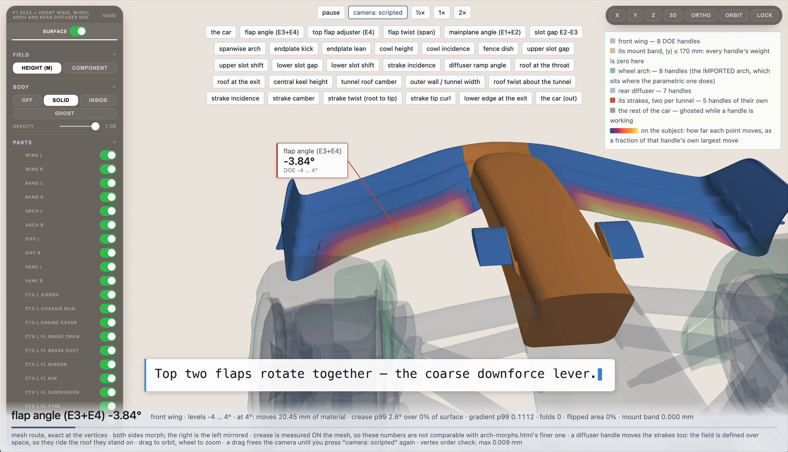

Physics Factory · Cadgen2 · motorsport aerodynamics
Real-Time Modification of F1 Aerodynamic Surfaces
Cadgen2 generates engineering-grade CAD assemblies from specifications, produces controlled design variants with defeatured geometry and extracts DOE parameterisations from imported CAD models. This article covers the second case study: a 2022-generation Formula 1 car. The parameterisation was derived from the supplied surface without a feature tree, and the front wing, wheel arch and rear diffuser are modified simultaneously and interactively.

The aerodynamic problem
The front wing determines the upstream flow conditions for the rest of the car. Its wake conditions the flow onto the floor leading edge, sidepod inlets, brake ducts and diffuser, so a front wing change affects the flow along the full length of the car. The wheel arch operates in the front wing wake and in the separated flow from the tyre, and diffuser performance depends on the flow arriving at its inlet. Performance differences between candidate designs are driven by a small set of geometric quantities:
- Front wing: element angles, the slot gaps between elements, spanwise twist distribution, and endplate geometry, which controls how much flow is turned outboard of the front tyre.
- Wheel arch: cowl height and incidence, fence dish, and the upper and lower slot gaps and shifts, which control the air bled through the arch instead of around it.
- Rear diffuser: ramp angle, roof height at the throat and at the exit, keel height, tunnel width and roof camber, plus the incidence, camber and twist of the strakes mounted inside each tunnel.
Identifying the best-performing combination requires generating and evaluating many variants of these surfaces. In conventional CAD this is slow and expensive, for reasons specific to this class of geometry:
- No parametric controls. Aerodynamic surfaces are sculpted meshes or sewn B-rep produced through surfacing and CFD iteration. Without a feature tree, a dimensional change requires re-surfacing instead of a parameter edit.
- Continuity and interfaces must be preserved. A modified element must retain tangency and curvature continuity with adjacent surfaces, keep its mounting faces at the positions the structure requires, and remain inside its regulatory volume. Each of these is checked manually.
- Parts are coupled. Raising a diffuser tunnel roof moves the strakes mounted on it. Wing changes must leave the mount position unchanged. Propagating a change across an assembly increases both the workload and the number of potential errors.
- Parameter count exceeds manual capacity. Approximately thirty geometric quantities span these three assemblies. At five levels each, the full combinatorial space contains millions of variants, and a useful subset still contains thousands. At several hours of surfacing work per variant, the study cannot be carried out manually.
- Each variant requires a validity check before solving. A morph or re-surface that folds the mesh, inverts elements or creases the surface either fails in the mesher or produces a plausible but incorrect CFD result.
Current workflow constraints
Engineering-grade CAD production is largely manual. The main costs are:
- Synchronisation across multipart assemblies. A dimensional change must propagate to mating parts, clearances, fastener positions and specification documents. Each propagation path is a potential source of divergence between model and drawing.
- Constraint compliance. Wall thickness, clearance, draft, minimum feature size and material allowables are typically enforced through manual design review. Violations are therefore identified late in the programme.
- Physical evaluation outside the design environment. CAD systems do not report structural performance or cost during modelling. Evaluation requires export to a separate simulation tool, meshing, solving and post-processing, with a cycle time of days per iteration. Most programmes are consequently limited to a small number of candidate geometries.
Cadgen2 is an AI-driven CAD engine that automates assembly creation, modification and specification, and connects to physics-based evaluation so that variants are generated and assessed within a single workflow. Outputs include per-part specifications, GD&T records, a bill of materials and STEP geometry.
Capabilities
- Automated design creation. Generates complete assemblies from a written specification, sketch, reference image or parameter table.
- Precision design variations. Applies natural-language instructions to a fully attributed component specification. A change can be scoped to a single dimension on one part or applied across the full assembly.
- Simulation defeaturing. Prepares geometry for meshing during generation. Load-bearing features are retained; features that increase element count without contributing to structural response are removed.
- Physics AI training data generation. Generates geometry variants across a defined design space, simulates each variant, and formats the results for Physics AI model training.
- End-to-end workflows. Connects to Physics Factory for design space definition, dataset consolidation, Physics AI model training and feedback into subsequent design iterations.
Model generation incorporates automated verification to detect and resolve non-physical geometry, specification inconsistencies and constraint violations. All validation checks execute directly on the generated geometry and exported files.
The Cadgen2 approach
Inputs to the study were the geometry, the permitted dimensional ranges and the optimisation objectives. No parametric model, feature tree or construction history was supplied, and no handles were defined manually.
Cadgen2 analysed the supplied CAD to determine the parameterisation: which quantities are available as control handles, the extent of each handle's region of influence, and how displacement blends into the surrounding surface. The result was 28 DOE handles across three assemblies:
- Front wing — 8 handles. Flap angle on elements 3 and 4 together, top flap adjuster on element 4 alone, flap twist across span, mainplane angle on elements 1 and 2, the E2–E3 slot gap, endplate kick and endplate lean.
- Wheel arch — 8 handles. Spanwise arch, cowl height, cowl incidence, fence dish, upper and lower slot gap, upper and lower slot shift.
- Rear diffuser — 7 handles. Ramp angle, roof at the throat, roof at the exit, central keel height, tunnel roof camber, outer wall and tunnel width, roof twist about the tunnel.
- Diffuser strakes, two per tunnel — 5 handles. Incidence, camber, twist root to tip, tip curl, lower edge at the exit.
The parameterisation has three relevant properties:
Modification is multi-assembly and simultaneous. A handle acts on a set of surfaces instead of a single patch. Flap angle rotates elements 3 and 4 together because that is the aerodynamically relevant degree of freedom. Both sides of the car are morphed, with the right side derived as the mirror of the left. The study model contains 46 parts; the front wing and wheel arch are morphed and the remaining parts are held at their as-built geometry.
Engineering interfaces are held automatically. The front wing mount band (|y| ≤ 170 mm) has zero weight for every handle, so the wing remains exactly on its mounting face at every DOE setting and nearby deformations do not displace it. The wheel arch in this study is an imported surface that occupies the same space as the parametric arch it replaces, so spatial alignment is maintained without re-registration after each edit.
Displacement fields are defined over space, not per part. A diffuser handle that raises the tunnel roof also moves the strakes mounted on it, because the field is evaluated at the strake positions. The strakes remain attached to the roof, consistent with the physical assembly.
Geometric validity metrics
Each handle is swept to its DOE limit to confirm that the morph remains valid across the full range. Validity is measured on the mesh, not assessed visually. Representative values at the limit:
| Handle | Range | Material moved | Crease p99 | Surface creased | Folds | Flipped area |
|---|---|---|---|---|---|---|
| flap angle (E3+E4) | −4 … 4° | 20.45 mm | 2.6° | 0% | 0 | 0% |
| upper slot gap (arch) | −4 … 8 mm | 8 mm | 15.2° | 4.02% | 0 | 0.0009% |
| roof at the throat | −15 … 15 mm | 15 mm | 6.2° | 0.62% | 0 | 0% |
These metrics determine whether a surface can be meshed and solved. Crease is the added dihedral angle between adjacent facets, reported at the 99th percentile with the fraction of surface area affected. Folds is the number of self-intersections in the deformed surface. Flipped area is the fraction of surface area with an inverted normal. For the three handles above and across the full sweep, folds are zero and flipped area is zero or 0.0009%, with vertex ordering preserved to within 0.009 mm. Morphed surfaces are passed to the mesher without a repair step.
Limitations: the displacement field deforms a supplied baseline and does not add or remove topology, so a feature absent from the imported geometry cannot be introduced by a handle. On B-rep input, the field is fitted to the NURBS poles instead of applied exactly; the residual is measured against the exact field, and the fit is rejected if it exceeds tolerance in the displaced region. On mesh input, vertices are displaced exactly.
Effect of real-time modification
A single handle is applied to the full surface in under one second. On a comparable 90,497-triangle car surface, application time was 465–547 ms across three settings, which is compatible with an interactive loop instead of a rebuild cycle. This has three consequences:
- The DOE is a parameter table. Each variant is a set of handle values. Geometry for several hundred points is generated by a scripted sweep, and each point is reproduced from its parameter values without storing a separate geometry file.
- Exploration and evaluation are combined. Variants are valid when generated, so they can be passed to a solver or to a trained physics AI model without a manual repair stage between design and evaluation.
- The parameterisation is reusable. Handles derived from the geometry apply to any surface of the same topology, so a new baseline reuses the existing study setup without rebuilding it.
The first case study in this series is covered in the companion post: an engineering assembly generated from a written specification, expanded to 50 variants and solved with explicit structural simulation.
AI-driven CAD design and optimisation
Cadgen2 is a component of the Physics Factory platform. It generates the geometric variation required for physics-based optimisation. These variants are used to train models built on BeyondMath's foundational Physics AI, and the trained models are used to optimise designs against simulated physical response instead of a proxy metric.
Variant requirements differ by use case. Design exploration on a released product typically requires a small number of controlled variants with correct specifications and a BOM. A training campaign requires several hundred decorrelated variants with solver decks attached. Both are generated from a parameter table applied to a single layout model. Each variant is stored as a parameter state of a few hundred bytes and rebuilds to identical geometry.
Get access
Generate and simulate design variants
Physics Factory covers geometry generation, simulation and model training on your own data, for structural, CFD, thermal and other physics.
Get access